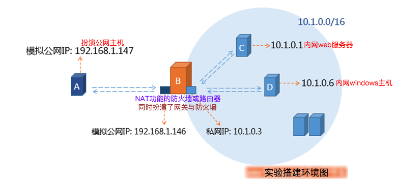

纸上得来终觉浅，绝知此事要躬行。
iptables 是运行在用户空间的应用软件，通过控制 Linux 内核 netfilter 模块，来管理网络数据包的处理和转发。在大部分 Linux 发行版中，可以通过手册页 或 man iptables 获取用户手册。通常 iptables 需要内核模块支持才能运行，此处相应的内核模块通常是 Xtables。
注释：更多 IPTABLES 命令的帮助，请查看官方文档 !
我们在 iptables 中使用 target 动作，需要使用 -j 来指定动作，如 ACCEPT、 DROP、 REJECT等。
| 常用的动作 | 动作含义解释 |
|---|---|
ACCEPT |
允许数据包通过 |
DROP |
直接丢弃数据包，不给任何回应信息，客户端会感觉请求泥牛入海，直到过了超时时间才会有反应 |
REJECT |
拒绝数据包通过，必要时会给数据发送端一个响应的信息，客户端刚请求就会收到拒绝的信息 |
SNAT |
源地址转换，解决内网用户用同一个公网地址上网的问题 |
DNAT |
目标地址转换，请求响应时需要 |
MASQUERADE |
是 SNAT 的一种特殊形式，适用于动态的、临时会变的 IP 上 |
REDIRECT |
在本机做端口映射 |
LOG |
在/var/log/messages 文件中记录日志信息，然后将数据包传递给下一条规则，也就是说除了记录以外不对数据包做任何其他操作，仍然让下一条规则去匹配 |
1. 基本动作
1.1 REJECT 动作
- 常用选项
| 动作 | 常用选项 | 设置提示信息（当对方被拒绝时会提示对方为什么被拒绝） |
|---|---|---|
REJECT |
--reject-with |
icmp-port-unreachable ==> 端口不可达(默认) |
icmp-host-unreachable ==> 主机不可达 |
||
icmp-net-unreachable |
||
icmp-proto-unreachable |
||
icmp-net-prohibited |
||
icmp-host-prohibited |
||
icmp-admin-prohibited |
# 将拒绝报文的提示默认为目标端口不可达
$ sudo iptables -t filter -A INPUT -j REJECT
# 将拒绝报文的提示设置为目标主机不可达
$ sudo iptables -t filter -I INPUT 2 -j REJECT --reject-with icmp-host-unreachable1.2 LOG 动作
- LOG 动作使用
使用LOG 动作，可以将符合条件的报文的相关信息记录到日志中，但当前报文具体是被接受，还是被拒绝，都由后面的规则控制。换句话说，LOG 动作只负责记录匹配到的报文的相关信息，不负责对报文的其他处理，如果想要对报文进行进一步的处理，可以在之后设置具体规则进行进一步的处理。
# 将发往22号端口的报文相关信息记录在日志中
$ sudo iptables -t filter -I INPUT -p tcp --dport 22 -j LOG
# 查看日志记录
$ sudo tail -f /var/log/messages但是上例中使用的匹配条件过于宽泛，所以匹配到的报文数量将会非常之多，记录到的信息也不利于分析。所以在使用 LOG 动作时，匹配条件应该尽量写的精确一些，这样冗余的日志信息就会变少，日后分析日志时信息可用程度更高。
上述规则表示所有发往 22 号端口的 tcp 报文都符合条件，所以都会被记录到日志中，查看 /var/log/messages 即可看到对应报文的相关信息。当然，我们有可以将相关信息记录在指定的文件中，以防止 iptables 的相关信息与其他日志信息相混淆。需要修改 /etc/rsyslog.conf 或者 /etc/syslog.conf 文件，在 rsyslog 配置文件中添加如下配置即可。
# 报文的相关信息将会被记录到指定文件
$ sudo vim /etc/rsyslog.conf
kern.warning /var/log/iptables.log
# 重启rsyslog或者syslogd服务
$ sudo service rsyslog restart- 常用选项
| 动作 | 常用选项 | 指定记录日志的日志级别 |
|---|---|---|
LOG |
--log-level |
emerg |
alert |
||
crit |
||
error |
||
warning |
||
notice |
||
info |
||
debug |
$ sudo iptables -t filter -I INPUT -p tcp --dport 22 \
-m state --state NEW -j LOG --log-level error| 动作 | 常用选项 | 给记录到的相关信息添加标签之类的信息 |
|---|---|---|
LOG |
--log-prefix |
以便区分各种记录到的报文信息，方便在分析时进行过滤，字符不能超过 29 个 |
$ sudo iptables -t filter -I INPUT -p tcp --dport 22 \
-m state --state NEW -j LOG --log-prefix "nginx-web-log"1.3 MASQUERADE 动作
MASQUERADE 动作是一个与 SNAT 类似的动作。
- 在CentOS6中，MASQUERADE规则只能存在于POSTROUTING链
- 在CentOS7中，MASQUERADE规则只能存在于POSTROUTING链与INPUT链
当我们拨号网上时，每次分配的 IP 地址往往不同，不会长期分给我们一个固定的 IP 地址。如果这时，我们想要让内网主机共享公网 IP 上网，就会很麻烦。因为每次 IP 地址发生变化以后，我们都要重新配置 SNAT 规则，这样显示不是很人性化。
我们通过 MASQUERADE 即可解决这个问题，MASQUERADE 会动态的将源地址转换为可用的 IP 地址，其实与 SNAT 实现的功能完全一致，都是修改源地址，只不过 SNAT 需要指明将报文的源地址改为哪个 IP，而 MASQUERADE 则不用指定明确的 IP，会动态的将报文的源地址修改为指定网卡上可用的 IP 地址。
下述中，我们指定通过外网网卡出去的报文在经过 POSTROUTING 链时，会自动将报文的源地址修改为外网网卡上可用的 IP 地址，这时，即使外网网卡中的公网 IP 地址发生了改变，也能够正常的、动态的将内部主机的报文的源 IP 映射为对应的公网 IP。
可以把 MASQUERADE 理解为动态的、自动化的 SNAT，如果没有动态 SNAT 的需求，没有必要使用 MASQUERADE，因为 SNAT 更加高效。
$ sudo iptables -t nat -I POSTROUTING -s 10.1.0.0/16 -o eno13344625 -j MASQUERADE1.4 REDIRECT 动作
使用REDIRECT 动作可以在本机上进行端口映射。
- REDIRECT 规则只能定义在 PREROUTING 链或者 OUTPUT 链中
经过下述规则映射后，当别的机器访问本机的 80 端口时，报文会被重定向到本机的 8080 端口上。
# 将本机的80端口映射到本机的8080端口上
$ sudo iptables -t nat -A PREROUTING -p tcp --dport 80 -j REDIRECT --to-ports 80802. 扩展动作
NAT，即网络地址转换 (Network Address Translation)。NAT说白了就是修改报文的IP地址，通常会被集成到路由器、防火墙、或独立的NAT设备中。
- SNAT 技术
- DNAT 技术
2.1 NAT 技术
【场景 1】隐藏网络内部主机（SNAT）（内网访问外网）
- 场景 1 中，前半段使用了
SNAT，后半段使用了DNAT。
当网络内部的主机向网络外部主机发送报文时，报文会经过防火墙或路由器，将报文的源 IP修改为防火墙或者路由器的 IP 地址。当其他网络中的主机收到这些报文时，显示的源 IP 地址则是路由器或者防火墙的，这样就起到隐藏网络内部主机 IP 的作用。
当网络内部主机的报文经过路由器时，路由器会维护一张NAT 表，表中记录了报文来自于哪个内部主机的哪个进程（内部主机 IP+端口），当报文经过路由器时，路由器会将报文的内部主机源 IP 替换为路由器的 IP 地址，把源端口也映射为某个端口，NAT 表会把这种对应关系记录下来。
于是，外部主机收到报文时，源 IP 与源端口显示的都是路由的 IP 与端口，当外部网络中的主机进行回应时，外部主机将响应报文发送给路由器，路由器根据刚才NAT 表中的映射记录，将响应报文中的目标 IP 与目标端口再改为内部主机的 IP 与端口号，然后再将响应报文发送给内部网络中的主机。整个过程中，外部主机都不知道内部主机的 IP 地址，内部主机还能与外部主机通讯，于是起到了隐藏网络内主机 IP 的作用。
上述整个过程中，就用到了 NAT 功能，准确的说是用到了NAPT 功能。NAPT 是 NAT 的一种，说白了就是映射报文 IP 地址的同时还会映射其端口号，就像刚才描述的过程一样。
- NAT
- SNAT：内部网络发送报文时，报文的源
IP会被修改，也就是源地址转换 - DNAT：外部网络响应报文时，响应报文的目标
IP会再次被修改，也就是目标地址转换
- SNAT：内部网络发送报文时，报文的源
- PAT
- SNAT：内部网络发送报文时，报文的源 PORT 会被修改，也就是源端口转换
- DNAT：外部网络响应报文时，响应报文的目标 PORT 会再次被修改，也就是目标端口转换
SNAT 不仅能够隐藏网内的主机 IP，还能够共享公网 IP，这在 IPV4 地址较为紧张的今天，是非常有用的。
【场景 2】内部主机对外提供服务（DNAT）（外网访问内网）
- 场景 2 中，前半段使用了
DNAT，后半段使用了SNAT。
公司有自己的局域网，网络中有两台主机作为服务器，主机 1 提供 web 服务，主机 2 提供数据库服务，但是这两台服务器在局域网中使用私有 IP 地址，只能被局域网内的主机访问，互联网无法访问到这两台服务器，整个公司只有一个可用的公网 IP 地址。
我们可以将这个公网 IP 配置到公司的某台主机或路由器上，然后对外宣称这个 IP 地址对外提供web 服务与数据库服务，于是互联网主机将请求报文发送给这公网 IP 地址。当路由器收到报文后，将报文的目标地址改为对应的私网地址。
- 如果报文的目标
IP与端口号为：公网 IP+80 端口- 我们就将报文的目标地址与端口改为 ==> 主机 1 的私网 IP+80 端口
- 如果报文的目标
IP与端口号为：公网 IP+3306 端口- 我们就将报文的目标地址与端口改为 ==> 主机 2 的私网 IP+3306 端口
当私网中的主机回应对应请求报文时，再将回应报文的源地址从私网 IP+端口号映射为公网 IP+端口号，再由路由器或公网主机发送给互联网中的主机。
其实，不管是 SNAT 还是 DNAT，都起到了隐藏内部主机 IP 的作用。
2.2 实验环境
- 主机
B有两块网卡分别配置私网IP与公网IP - 主机
C与主机D的网关都指向主机B的私网IP

2.3 SNAT 动作
- 在CentOS6中，SNAT规则只能存在于POSTROUTING链
- 在CentOS7中，SNAT规则只能存在于POSTROUTING链与INPUT链
| 动作 | 常用选项 | 选项解释 |
|---|---|---|
SNAT |
--to-source |
指定路由器修改之后源地址 |
# 开启Linux主机的核心转发功能
$ sudo echo 1 > /proc/sys/net/ipv4/ip_forward
# 将10.1.0.0/16网段的主机通过路由器转发出去，源地址改为了路由器的外网地址
$ sudo iptables -t nat -I POSTROUTING -s 10.1.0.0/16 -p tcp \
-j SNAT --to-source 192.168.1.1462.4 DNAT 动作
- DNAT规则只配置在PREROUTING链与OUTPUT链
| 动作 | 常用选项 | 选项解释 |
|---|---|---|
DNAT |
--to-destination |
指定路由器修改之后目的地址 |
# 开启Linux主机的核心转发功能
$ sudo echo 1 > /proc/sys/net/ipv4/ip_forward
# 外部网络访问内部主机的远程连接功能，需要配置DNAT
$ sudo iptables -t nat -I PREROUTING -d 192.168.1.146 -p tcp \
--dport 3389 -j DNAT --to-destination 10.1.0.6:3389
# 还需要配置相应的SNAT规则
$ sudo iptables -t nat -I POSTROUTING -s 10.1.0.0/16 -p tcp \
-j SNAT --to-source 192.168.1.1463. 实例演示
3.1 网络地址转发
需要内网访问互联网：[1] NAT Server（网络层+传输层），[2] 代理服务器（应用层）。
# 转换过程，内网访问互联网，使用tcpdump进行抓包进行验证
Client(192.168.20.2) ==> (192.168.20.1)Nat Server(172.16.100.9) ==> Server(172.16.100.6)- 转发主机（路由器或者 NAT 设备）
# CentOS6，打开核心转发功能
$ sudo echo 1 > /proc/sys/net/ipv4/ip_forward
# CentOS7，打开核心转发功能
$ sudo echo "net_ipv4_ip_forward = 1" > /etc/sysctl.d/99-sysctl.conf# 编辑虚拟机，再添加一块网卡，自定义为VMnet2网络适配器
# 两块网卡
eno16777739: 172.16.100.9
eno33554992: 192.168.20.1
# 添加的网卡配置 [二选一配置]
$ sudo ifconfig eno33554992 192.168.20.1/24 up
IP addr add 192.168.20.1/24 dev eno33554992# 在forward链中进行网络防火墙规则设定
# 只配置web服务
$ sudo iptables -F
$ sudo iptables -P FORWARD DROP
$ sudo iptables -A FORWARD -d 192.168.20.2 -p tcp --dport 80 -j ACCEPT
$ sudo iptables -A FORWARD -s 192.168.20.2 -p tcp --sport 80 -j ACCEPT
# 配置ssh/web服务
$ sudo iptables -F
$ sudo iptables -A FORWARD -m state --state ESTABLISHED -j ACCEPT
$ sudo iptables -A FORWARD -d 192.168.20.2 -p tcp -m multiport \
--dports 22,80 -m state --state NEW -j ACCEPT
# 配置ssh/web/ftp服务
$ sudo iptables -F
$ sudo modprobe nf_conntrack_ftp
$ sudo iptables -R FORWARD 1 -m state --state ESTABLEISHEN,RELATED -j ACCEPT
$ sudo iptables -R FORWARD 2 -m -d 192.168.20.2 -p tcp -m multiport \
--dports 21,22,80 -m state --state NEW -j ACCEPT- 外网主机（外网网关需要指定为转发主机的
172.16.100.9地址）
# 单个主机单网卡，172.16.100.6
$ sudo ifconfig eth0 172.16.100.6/16 up
$ sudo route add -net 192.168.20.0/24 gw 172.16.100.9- 内网主机（内网网关需要指定为转发主机的
192.168.20.1地址）
# 单个主机单网卡，网卡连接VMnet2网络适配器，192.168.20.2
$ sudo ifconfig eth0 192.168.20.2/24 up
$ sudo route add default gw 192.168.20.13.2 源地址转换
- 模板
# 目的主机不是当前网络的主机进行转发 ExtIP=FIP 请求报文过程 nat表中保存链接追踪
$ sudo iptables -t nat -A POSTROUTING -s LocalNET ! \
-d LocalNet -j SNAT --to-source ExtIP
$ sudo iptables -t nat -A POSTROUTING -s LocalNET ! -d LocalNet -j MASQUERADE- 实例
$ sudo iptables -t nat -A POSTROUTING -s 192.168.20.0/24 ! \
-d 192.168.20.0/24 -j SNAT --to-source 172.16.100.9
# 拨号上网的话ExtIP是随机的，使用MASQUERADE可以地址伪装
$ sudo iptables -t nat -A POSTROUTING -s 192.168.20.0/24 ! \
-d 192.168.20.0/24 -j SNAT --to-source MASQUERADE3.3 目标地址转换
- 模板
# 负载均衡iptables早起支持 IPVS基于十种方式实现负载均衡=LVS
# 内网中的主机映射到公网中，让公网可以访问内网主机 响应报文过程 nat表中保存链接追踪
$ sudo iptables -t nat -A PREROUTING -d ExtIP -p tcp|udp \
--dport PORT -j DNAT --to-destination InterSeverIP[:PORT]- 实例
$ sudo iptables -t nat -A PREROUTING -d 172.16.100.9 -p tcp \
--dport 80 -j DNAT --to-destination 192.168.20.2:8080
$ sudo iptables -t nat -A PREROUTING -d 172.16.100.9 -p tcp \
--dport 20 -j DNAT --to-destination 192.168.20.2